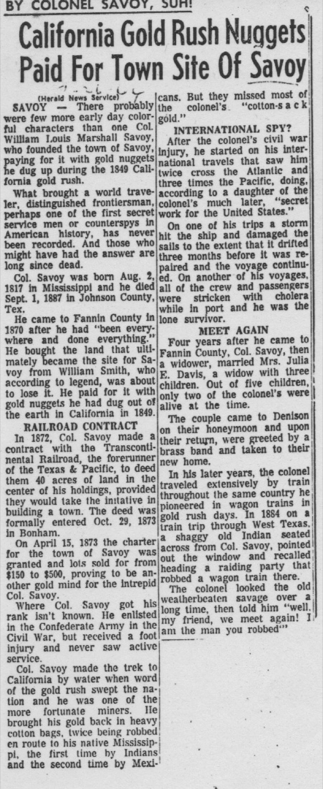

By 1884, Col. William Savoy was past sixty and the town that bore his name was four years into its post-cyclone rebuild. The college was still standing — it would burn six years later — and the commercial district had shifted from the demolished Main Street to the new Hayes Street. Savoy was alive, recovering, becoming something more permanent than its founders had dared to plan.
The Colonel was traveling. This was not unusual for him; his entire life had been movement — Mississippi to California, California back east, eastward across the Atlantic and westward across the Pacific, south to South America, and back again. By the time he had settled in Fannin County in 1870 and made his deal with the railroad in 1872, he had already lived enough lives for three men. Travel was simply what he did.
He boarded a train in Denison, heading to Dallas. In his pocket or in his luggage — the account from the 1964 newspaper does not specify — he still carried gold nuggets from his 1849 California trip. He had kept them for thirty-five years. Whatever they meant to him, they were worth keeping.

On the train he met a man he recognized. The man was Native American, someone the Colonel had known during his years in Indian Territory — which he had passed through at some point in his peripatetic career, the dates and circumstances not precisely recorded. The man sat down. They talked.
At some point in the conversation, the man from Indian Territory reached into his coat and produced a gold nugget of his own. California gold. He had been there too, in 1849 or thereabouts, in the great rush that had drawn men from every corner of the continent and several others besides. He and Col. Savoy, an aging Confederate spy turned North Texas land dealer, had been at the same goldfields thirty-five years before.
Col. Savoy still carried California gold nuggets in 1884, thirty-five years after the gold rush. On a train from Denison to Dallas he met a man from Indian Territory who pulled out a gold nugget of his own. They compared their California days all the way to Dallas. — 1964 newspaper retrospective
They compared notes all the way to Dallas. The archive preserves this story in a 1964 newspaper piece — written eighty years after the train ride, sourced to family accounts and local memory — as an illustration of what kind of man Col. Savoy was and what kind of world he had moved through. A man who had survived yellow fever and cholera and the Civil War and the Gold Rush and two Atlantic crossings and three Pacific crossings, who had watched a tornado demolish the town he'd founded, who still carried gold nuggets in his pocket in his sixties.
On a train from Denison to Dallas, he recognized a man he'd crossed paths with in Indian Territory, and the man pulled out a gold nugget, and they talked about California in 1849, and that was a Tuesday afternoon in 1884 in North Texas, ordinary as anything.
All Tales